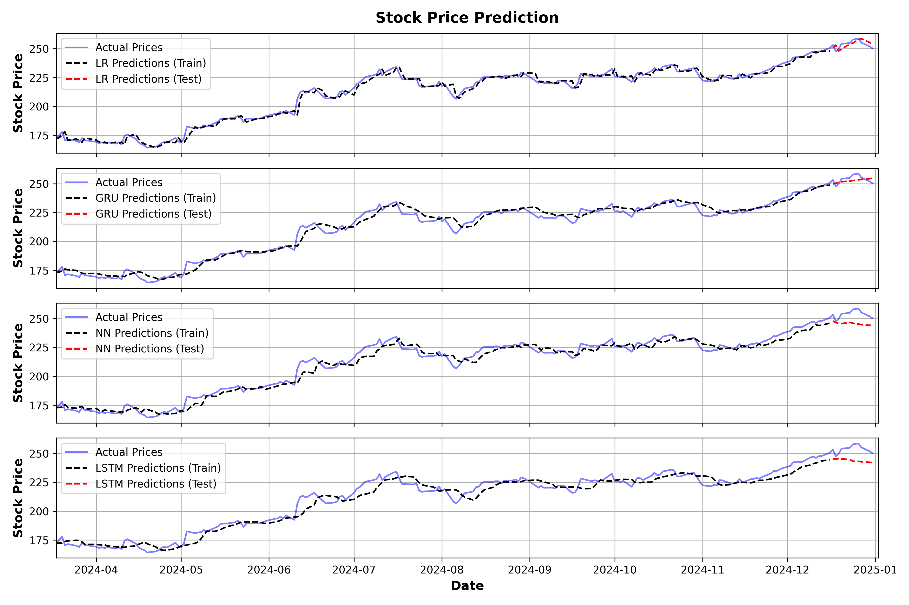

Time series
Summary: Exploring different machine learning algorithms to predict stock prices in an interval 1-10 days, on historical data.
Keywords: Machine Learning, Scikit-learn, TensorFlow
Repository: timeseries_forecasting_ml
Date: 3 April 2025 (work in progress)
As a first working example I take the Apple stock price from 01-01-2020 to 01-01-2024. The models are trained on these data minus the last 10 days, and then predict the value for these days. I use the closing price and train the models with lag features, the past 5 closing prices with respect to the target value. The models are:
- Linear Regression (LR): fits only the 5 lag features
- Neural Network (NN): forward feeding network with an input layer of 5 fully connected neurons to read the lag features and hidden one with 20 neurons
- Gated Recurrent Unit (GRU): 2 layers of 20 units
- Long Short-Term Memory (LSTM): 2 layers of 20 cells
For the three different neural networks, in this experiment, I used an Adam optimizer with learning rate 0.001, mean squared error (MSE) as the loss function, 50 epochs for training, and batches of size 64 (that is training data points process simultaneously). Based on the MSE of the predictions the ranking is the following (best to worst): LR, GRU, NN, LSTM.
Updates on more experiments and results are on the way.